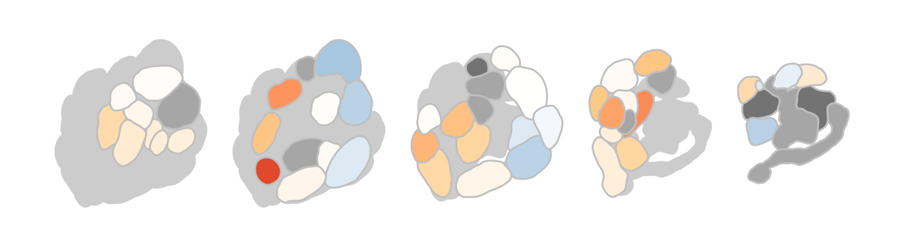
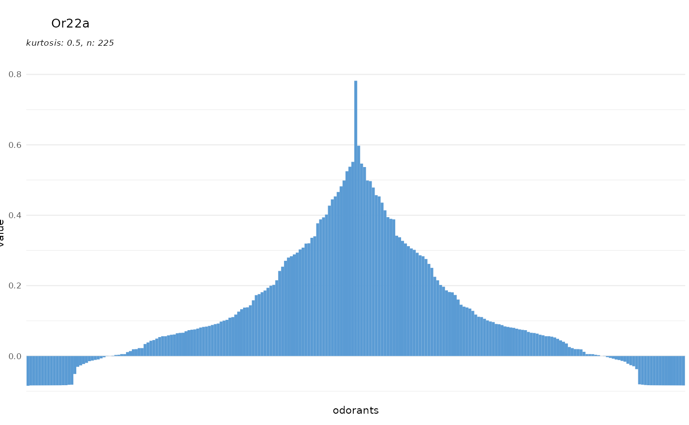
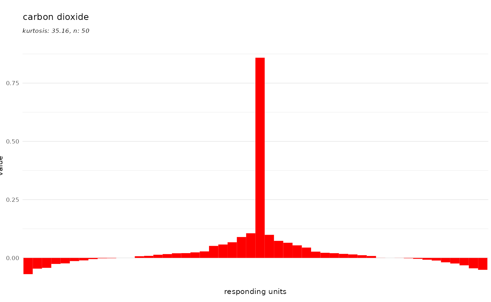
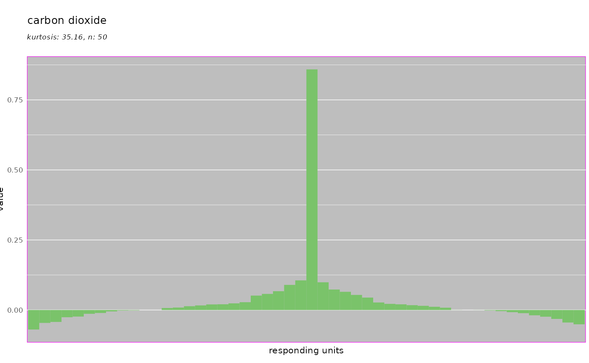
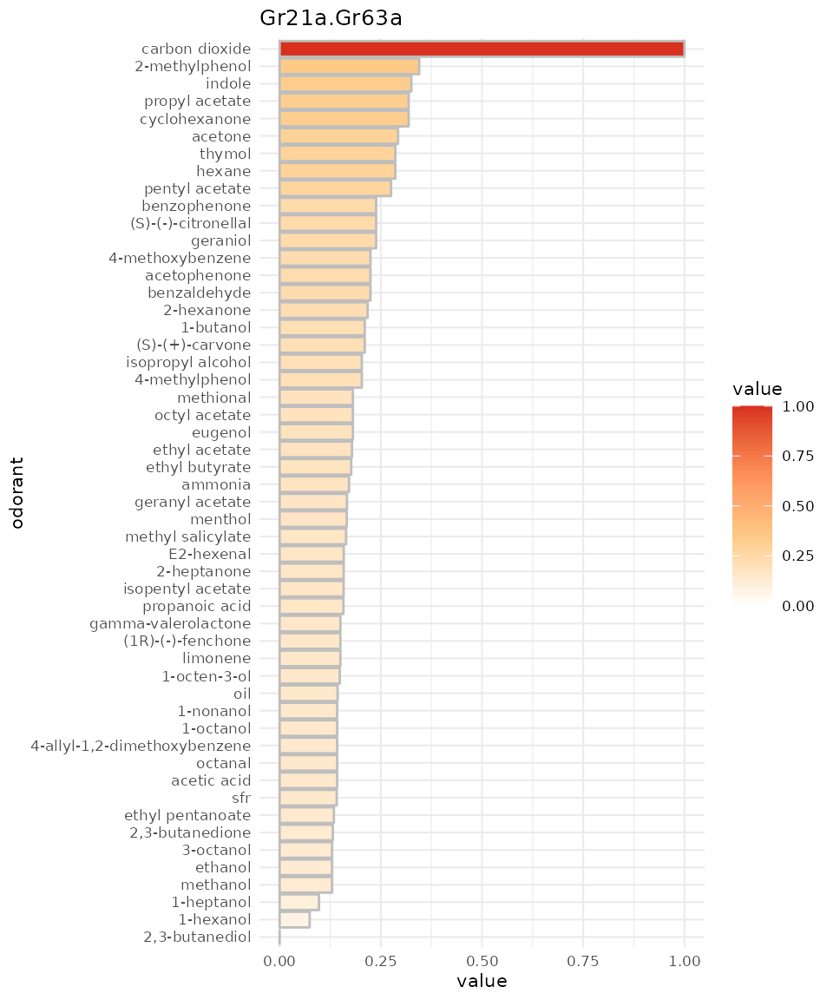
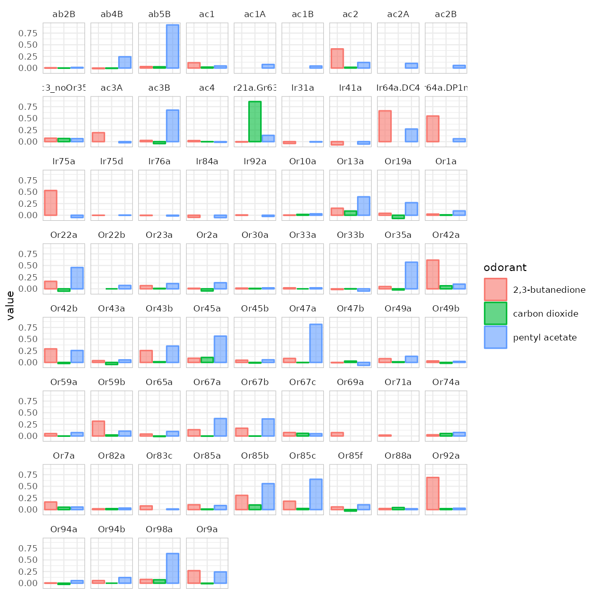

Visualizing DoOR
Daniel Münch
2024-03-19
Source:vignettes/DoOR_visualizations.Rmd
DoOR_visualizations.RmdApart from merging data and performing calculations on it, the DoOR.functions package provides several ways to visualize the data served by the DoOR.data package. Please see the DoOR.function vignette for instructions on how to install and load both functions and data. The plotting functions can be identified by their common prefix dplot_, most of them make use of the ggplot2 package which allows to override most, if not all of the theming options.
Content
- Loading data
- Visualizing odorants vs responding units with
dplot_response_matrix() - Visualizing ensemble responses with
dplot_al_map() - Visualizing tuning curves with
dplot_tuningCurve() - Visualizing response profiles
dplot_response_profile() - Comparing response profiles
dplot_compare_profiles() - Visualizing odorant responses across responding units with
dplot_across_ru() - Visualizing odorant responses across OSNs with
dplot_across_osns()
Loading data
First we need to load packages and data:
#load data
library(DoOR.functions)## Loading required package: DoOR.data##
## Welcome to DoOR.data
## Version: 2.0.1
## Released: 2017-03-07
##
## Please use load_door_data() to load all data into your workspace now.##
## Welcome to DoOR.functions
## Version: 2.0.2
## Released:
##
## Please note that all function names have been changed to 'snake_case'
## for consistency.
##
## Old 'camelCase' function names will stop working in one of the next
## versions.
library(DoOR.data)
load_door_data(nointeraction = TRUE)Visualizing odorants vs responding units with dplot_response_matrix()
{#responseMatrix} dplot_response_matrix() visualizes the DoOR consensus response matrix either as a point matrix with the size of the points relating to the response strength, or as a heatmap, relating color to response strength. The default plot that is used depends on the data we enter: positive values only (like from door_response_matrix or door_response_matrix_non_normalized) which are scaled [0,1] will by default be plotted as a point-matrix. If we provide data that contains negative values (e.g. data with the spontaneous firing rate set to 0 via reset_sfr(door_response_matrix, "SFR")) it will be shown as color-coded heatmap.
dplot_response_matrix(door_response_matrix[2:50,], tag = "Name", base_size = 8)## Only positive values, returning b&w point plot.If the data contains negative values, a colored response matrix will be plotted:
dplot_response_matrix(reset_sfr(door_response_matrix, "SFR")[2:50,],
tag = "Name", base_size = 8)
Visualizing ensemble responses with dplot_al_map()
With dplot_al_map() we can visualize the ensemble response a given odorant elicits across DoOR responding units (receptors, sensory neurons, glomeruli, … ) as a hypothetical antennal lobe activation pattern.
dplot_al_map("QSJXEFYPDANLFS-UHFFFAOYSA-N", base_size = 8) If we do not know the InChIKey of the substance we are interested in, we can use the trans_id() function for conversion. If we are interested in the expressed receptor rather than the glomerulus names:
dplot_al_map(trans_id("benzaldehyde", from = "Name"), tag = "receptor",
main = "SMILES", base_size = 8)If we prefer the plain activation pattern without annotations at all:
dplot_al_map(trans_id("628-63-7", from = "CAS"), tag = "", main = "",
legend = FALSE, scalebar = FALSE)
Visualizing tuning curves with dplot_tuningCurve()
Responding units
The set of odorants a given responding unit is responsive to can be described as its tuning curve. With dplot_tuningCurve() we can easily display such a tuning curve together with its kurtosis. Kurtosis is a measure of the shape of the tuning curve, i.e. whether a responding unit is narrowly tuned to a few odorants (high kurtosis), or whether it responds to many odorants (low kurtosis). The gaussian distribution has a kurtosis of 0.
If we only specify the receptor/response unit name, the data is taken from door_response_matrix and dplot_tuningCurve() uses reset_sfr() to reset spontaneous firing rate (or any other specified odorant) to zero before plotting.
dplot_tuningCurve(receptor = "Or22a", base_size = 8)
To prevent resetting by SFR:
dplot_tuningCurve(receptor = "Or22a", zero = "", base_size = 8)We can also plot any other vector of responses, once response.vector is specified, the value of receptor is only used for the plot title and not for data lookup anymore:
dplot_tuningCurve(receptor = "receptor X", response.vector = c(1:100),
base_size = 8)Odorants
dplot_tuningCurve() can as well be used to visualize the ensemble of responding units that is activated by a given odorant. Therefore, we specify an odorant name instead of a response unit name:
dplot_tuningCurve(odorant = "PGMYKACGEOXYJE-UHFFFAOYSA-N", base_size = 8)We can specify the chemical identifier to plot via odor.main:
dplot_tuningCurve(odorant = "PGMYKACGEOXYJE-UHFFFAOYSA-N", odor.main = "SMILES",
base_size = 8)
dplot_tuningCurve(odorant = "CURLTUGMZLYLDI-UHFFFAOYSA-N", odor.main = "InChI",
base_size = 8)And finally we can control the color of the bars:
dplot_tuningCurve(odorant = trans_id("carbon dioxide", from = "Name"),
fill.odorant = "#FF0000", base_size = 8)
As mentioned, all of these plots are generated with the ggplot2 package which allows to override theming:
library(ggplot2)
dplot_tuningCurve(odorant = trans_id("carbon dioxide", from = "Name"),
base_size = 8) +
theme(panel.background = element_rect(fill = "grey", color = "magenta"))
Visualizing response profiles dplot_response_profile()
dplot_response_profile creates a horizontal bar plot of the response profile of a given receptor. It displays the same data as dplot_tuningCurve but focusses on the odorant identity.
Per default the response strength is displayed as bar height as well as color code:
dplot_response_profile("Gr21a.Gr63a", tag = "Name", base_size = 8)We can again omit to reset to SFR:
dplot_response_profile("Gr21a.Gr63a", tag = "Name", base_size = 8, zero ="")
And if we prefer monochrome data:
dplot_response_profile("Gr21a.Gr63a", tag = "CAS", base_size = 8,
colored = FALSE)Comparing response profiles dplot_compare_profiles()
As the name indicates, with dplot_compare_profiles() we can plot two response profiles side by side for comparison. The syntax here differs from the previous plots as we can use it also to compare the original data sets in DoOR.
Comparing original data sets
This time, with x and y we have to specify a whole data.frame, by.x and by.y take the corresponding column names that will be plotted. If x is not specified, both by.x and by.y will be taken from x.
dplot_compare_profiles(x = Or22a, y = Or22a, by.x = "Pelz.2006.AntEC50",
by.y = "Hallem.2004.EN", tag = "Name", base_size = 8)We see that the measured Or22a sensory neuron responses in these two data sets are in good accordance.
Comparing DoOR response profiles
Next we compare two DoOR consensus response profiles, measurements of the misexpressed receptor Or35a and recordings from the ac3B sensory neuron that naturally expresses Or35a:
dplot_compare_profiles(
x = door_response_matrix,
by.x = "Or35a",
by.y = "ac3B",
tag = "Name",
base_size = 8
)or with “SFR” set to 0:
dplot_compare_profiles(
x = reset_sfr(door_response_matrix, "SFR"),
by.x = "Or35a",
by.y = "ac3B",
tag = "Name",
base_size = 8
)We see that the response profiles are very similar but not identical, which is expected as the ac3B neuron expresses other receptors in addition to Or35a.
Visualizing responses across responding units with dplot_across_ru()
{#acrossReceptors} With dplot_across_ru() we can visualize the responses that one or several odorants elicit across receptors / responding units.
odors <-
trans_id(c("pentyl acetate", "carbon dioxide", "2,3-butanedione"),
from = "Name")
dplot_across_ru(odors, tag = "Name", base_size = 8)
Visualizing odorant responses across OSNs with dplot_across_osns()
{#across_OSNs} dplot_across_osns() is similar to dplot_across_ru() but the responding units are sorted according to the sensory neuron they belong to. This sorting is controlled via door_mappings from the DoOR.data package. There are two types of plot that dplot_across_osns() can return. Type 2 directly resembles dplot_across_ru():
dplot_across_osns(odors, base_size = 8, plot.type = 2)## Warning: Removed 37 rows containing missing values or values outside the scale range
## (`geom_bar()`).In type 1 the data is split according to odorant X sensillum, the color is assigned to the corresponding neuron A-D or X-Z if the neuron’s identity is unknown:
dplot_across_osns(odors, base_size = 8, plot.type = 1)## Warning: Removed 37 rows containing missing values or values outside the scale range
## (`geom_bar()`).As this plot gets pretty messy, we have the option to restrict plotting to certain subsets of sensilla. We can for example only plot the responses of antennal basiconic (ab) sensilla:
dplot_across_osns(odors, base_size = 8, plot.type = 1, sub = "ab")## Warning: Removed 2 rows containing missing values or values outside the scale range
## (`geom_bar()`).
Or we plot coeloconic and trichoid sensilla:
dplot_across_osns(odors, base_size = 8, plot.type = 1, sub = c("ac", "at"))## Warning: Removed 19 rows containing missing values or values outside the scale range
## (`geom_bar()`).